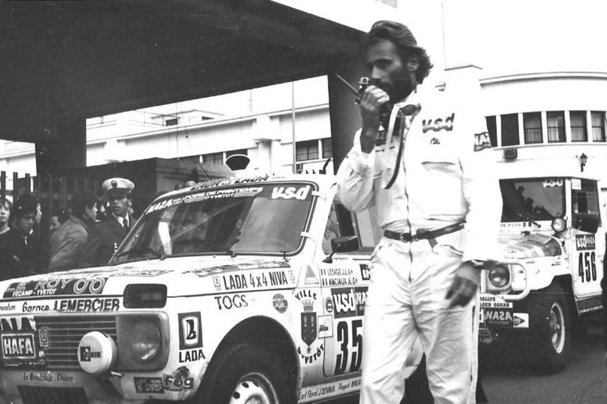

Temos
1979m. Dakaro ralis buvo pirmosios ralio lenktynės. Jos prasidėjo 1978m. gruodžio 26 dieną Paryžiuje. Ralio finišas buvo Dakare 1979 m. sausio 14 d.. Kieno sostinė yra Dakaras?

Atsakymas
Senegalo